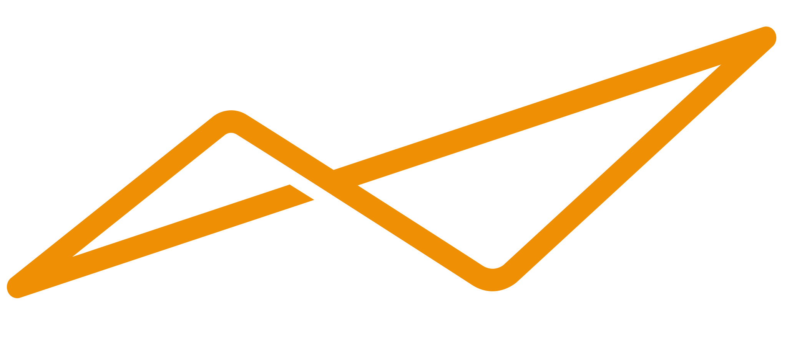
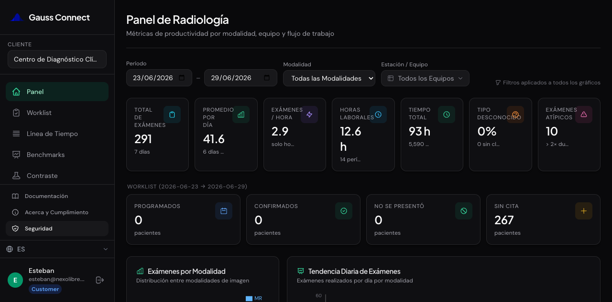
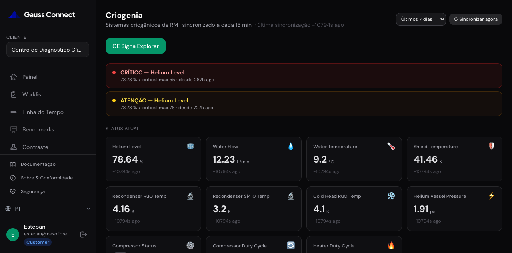
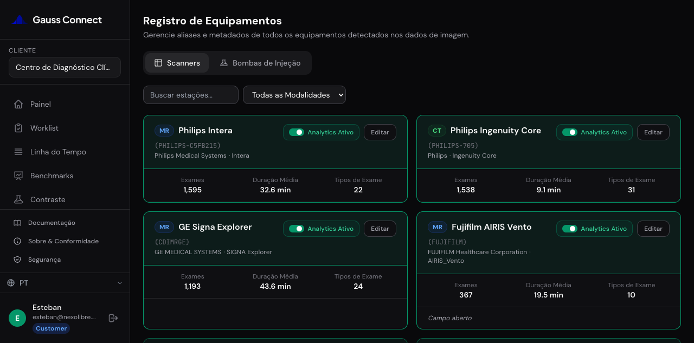
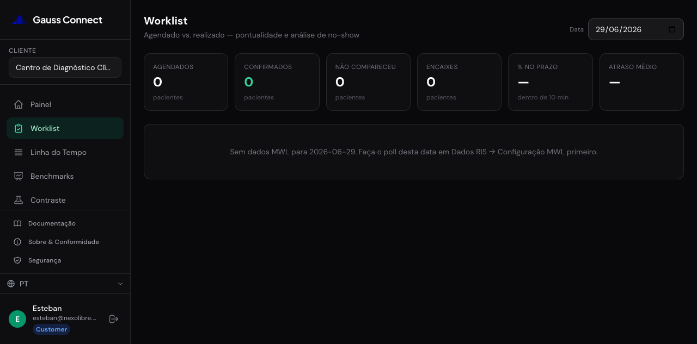
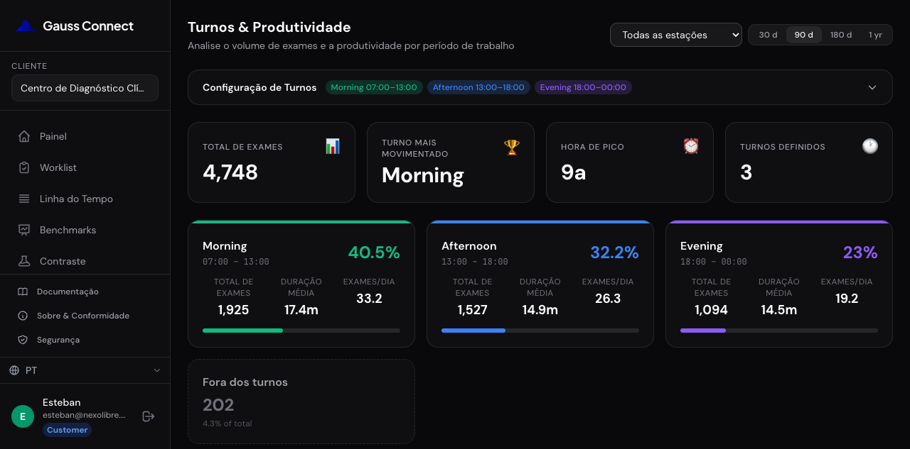
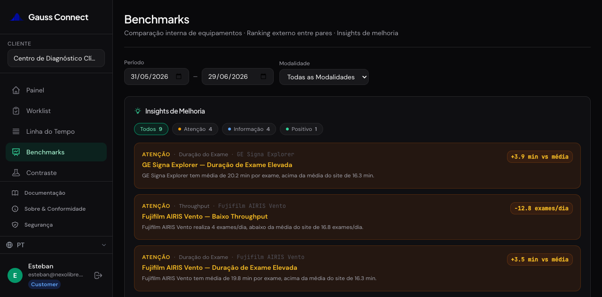
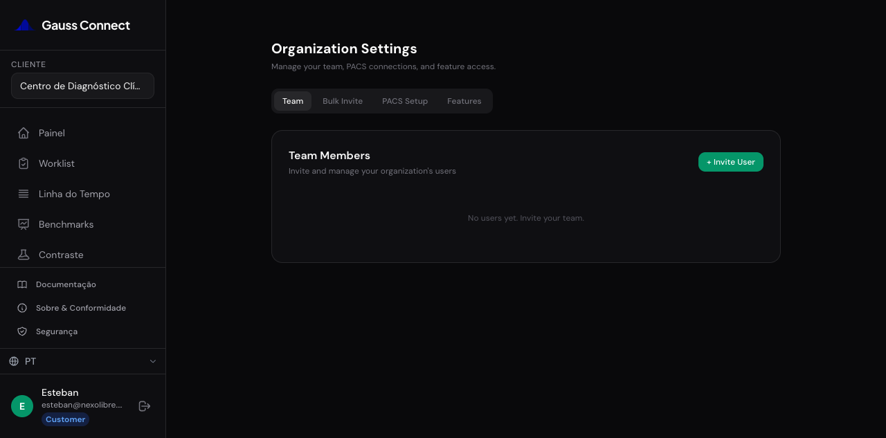
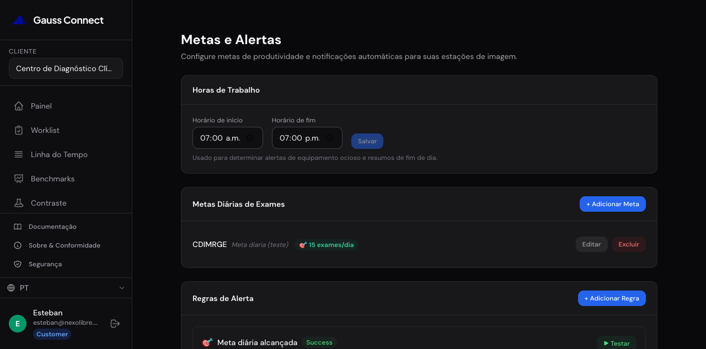
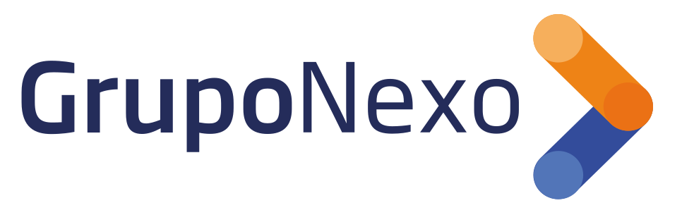

El pulso de tu servicio
de imágenes, en tiempo real.
Vigilamos el estado técnico de cada equipo y lo cruzamos con la producción del centro — datos accionables para ingeniería, radiología, finanzas y dirección.

El desafío02 / 15El activo más caro del servicio,
operando a ciegas.
Fallas sin aviso
Un quench del imán o una degradación silenciosa: días de inactividad y un costo enorme, sin alertas tempranas.
Capacidad desperdiciada
Turnos mal distribuidos, salas ociosas y tiempos de giro que no se miden.
Decisiones sin datos
Producción, finanzas y personal se gestionan por intuición, no por métricas.
Cada área, su isla
Ingeniería, radiología y administración no comparten una misma fuente de verdad.
Un tablero vivo
de tu servicio.
Un dispositivo compacto y no invasivo más una plataforma en la nube monitorean cada equipo 24/7 — sin acceder a datos de pacientes — y cruzan el estado técnico con la producción del centro.
- Conecta con DICOM, PACS y RIS · integra tu parque multimarca
- Un único tablero para todas tus sedes, equipos y marcas

Cada perfil, su dato de valor.
Salud técnica del equipo
Helio, cold head, presión, riesgo de quench y mantenimiento predictivo.
Producción y flujo
Volumen, tiempos de giro, turnos, worklist y calidad de protocolo.
Ingresos y eficiencia
Utilización, downtime evitado, previsión de producción y costos.
Control multi-sede
Un tablero único con metas, alertas y comparación entre equipos.
Detectar el quench
antes de que ocurra.
Nivel de helio, presión del magneto, cold head y criocompresor, relevados en tiempo real. Ante un valor crítico, el sistema avisa — antes de la pérdida de helio y semanas de inactividad.
- Mantenimiento predictivo: detecta anomalías y degradación temprana
- Historial de alertas y soporte remoto integrado


Cada resonador,
bajo la lupa.
Registro de todo el parque — Philips, GE, Fujifilm — con exámenes, duración media y tipos por estación. El sistema compara equipos entre sí y contra pares del sector para detectar degradación.
- Radar de desempeño y benchmark interno por equipo
- Alertas de bajo throughput o duración atípica
Del agendado
al informe.
Volumen de estudios, exámenes por día y tiempo de giro por equipo. La worklist cruza agendado vs. realizado: puntualidad, no-shows, encajes y atraso medio — el pulso real del flujo.
- Tiempo de giro y giro de paciente entre estudios
- Detección de exámenes atípicos y lacunas de protocolo


Dónde ganar
capacidad.
Productividad por turno (mañana, tarde, noche), mapa de calor hora×día y tendencia mensual. Muestra las franjas ociosas y sugiere cómo redistribuir la agenda y anticipar la demanda.
- Ocupación real vs. meta · ¿lista para expandir?
- Línea de tiempo por estudio y por serie
Cada hora de equipo,
medida.
Utilización y ocupación por equipo, downtime evitado y previsión de producción. Convierte la operación en números para presupuestar y proteger los ingresos.


Todo el servicio,
en una pantalla.
Un tablero único para todas las sedes, equipos y marcas, con roles por usuario. La dirección ve el estado global y compara centros sin pedir reportes manuales.
- Metas de productividad y alertas automáticas configurables
- Una sola fuente de verdad para todas las áreas
Alertas que se
adelantan.
El sistema genera insights automáticos — prioriza oportunidades de mejora por equipo — y dispara reglas de alerta configurables: equipo ocioso, meta alcanzada, valor crítico.
- Metas diarias por estación y notificaciones automáticas
- Soporte remoto integrado para actuar a distancia

Sin datos de pacientes.
Cifrado de punta a punta.
En marcha en días, no meses.
Conector local
Instalador Ubuntu de un solo comando, con túnel cifrado a la nube.
Se conecta al PACS
Lee metadatos DICOM del PACS/RIS existente. Sin abrir puertos.
Dispositivo no invasivo
Releva el estado técnico del equipo sin intervenir el escáner.
Tablero en vivo
El equipo ve sus métricas y alertas — multimarca, sin hardware clínico nuevo.
Lo que cambia cuando
todo el servicio se mide.
Veámoslo sobre
tus equipos.
Agendá un demo y te mostramos el impacto sobre tu producción, tus tiempos y tu mantenimiento — con tus equipos y tu flujo.
Solicitar un demo →
Nexolibre es miembro de Grupo Nexo